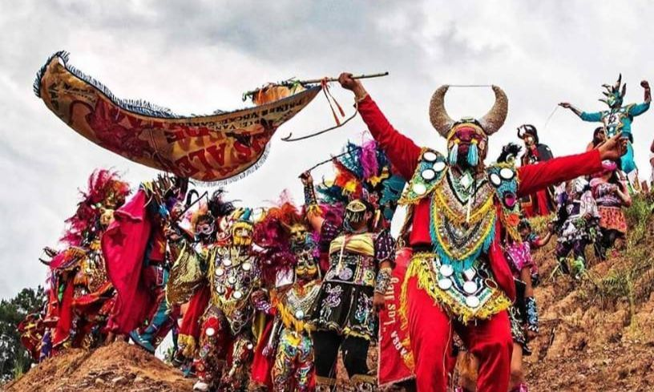

Explora la riqueza cultural de nuestra madre tierra y sus celebraciones.
La Pachamama, madre tierra en la cosmovisión andina, es celebrada por sus dones y su conexión espiritual con la vida.
A través de rituales y ofrendas, las comunidades honran su vitalidad y agradecen su abundancia.
El Carnaval de la Quebrada de Humahuaca comienza el sábado anterior al fin de semana de Carnaval, cuando grupos de comparsas llegan al pie de los cerros que rodean los pueblos para desenterrar al “diablo”, que fue sepultado al finalizar el carnaval pasado.
El “maligno” es un pequeño muñeco, denominado Pucllay, que simboliza al sol.
Según el mito local, fue el encargado de fecundar a la tierra, reconocida como la Pachamama.
Una vez desenterrado el diabólico títere, la curiosa celebración comienza.